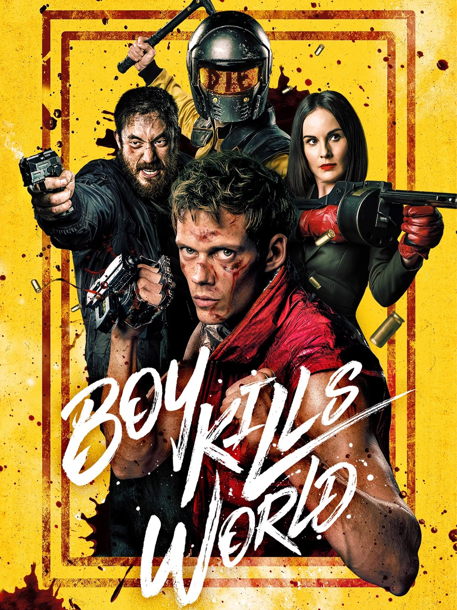
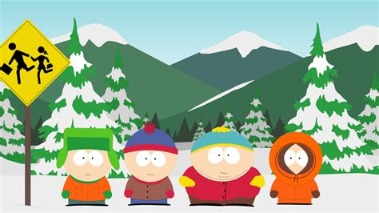
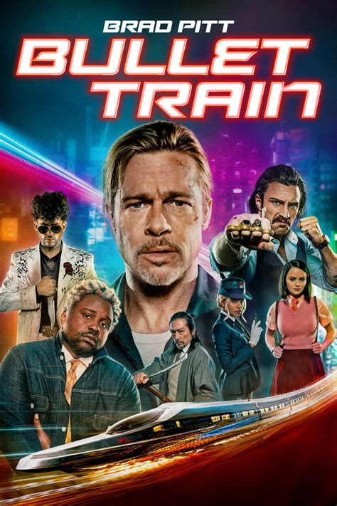
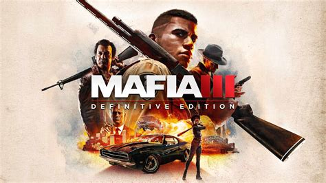

John Wick

Jardani Jovonovich auch genannt John Wick
ist nicht nur einer der tödlichsten Attentäter
sondern auch Mitglied bei der Payday Gang!
Its Always Sunny In Philadelphia

Fünf selbstsüchtige Freunde betreiben eine heruntergekommene Bar in Philadelphia.
Sie geraten ständig in absurde, moralisch fragwürdige
Chaos, Egoismus und schwarzer Humor bestimmen ihr Leben.
Grand Thef Auto V

Grand Theft Auto V spielt in Los Santos, einer Parodie auf Los Angeles.
Die Stadt liegt im fiktiven Bundesstaat San Andreas, der Südkalifornien nachempfunden ist.
Orte und Behörden basieren auf realen Vorbildern, erscheinen aber in veränderter, fiktiver Form.
Boy Kills World
Ein gehörloser Kampfsportler, der in einem Dschungel aufwuchs,
begibt sich in die Stadt um dort Rache für die Ermordung seiner Familie üben.
South Park
South Park ist eine satirische Zeichentrickserie über vier Kinder in einer Kleinstadt in Colorado.
Die Serie ist bekannt für schwarzen Humor, gesellschaftskritische Themen und oft kontroverse Inhalte.
Trotz einfacher Animation ist sie seit den 1990ern ein weltweites Kultphänomen.
Cyberpunk 2077

Cyberpunk 2077 ist ein Open-World-Rollenspiel von CD Projekt Red.
Es spielt in der futuristischen Metropole Night City, die von Megakonzernen, Technologie und Gewalt geprägt ist.
Man schlüpft in die Rolle von V, einem Söldner, der nach Macht, Ruhm und Überleben strebt.
Bullet Train
Wollte den Film anschauen,
bis heute nicht geschaft
Breaking Bad

Ein Chemielehrer wird zum Drogenkoch.
Mit seinem Partner steigt er ins Meth-Geschäft ein.
Moral und Gewalt eskalieren immer mehr.
Mafia III
 Mafia III spielt 1968 in der fiktiven Stadt New Bordeaux, die New Orleans ähnelt.
Man steuert Lincoln Clay, einen Vietnam-Veteranen auf Rachefeldzug gegen die italienische Mafia.
Ziel ist es, ein eigenes Verbrecherimperium aufzubauen.
Vive le roi!
le roi est mort!
Vive le roi!